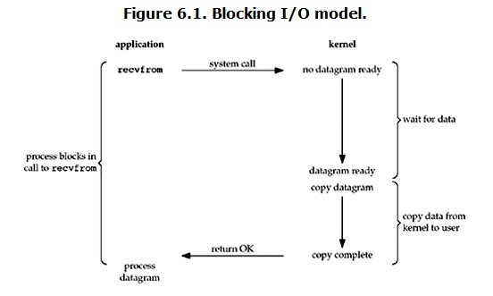
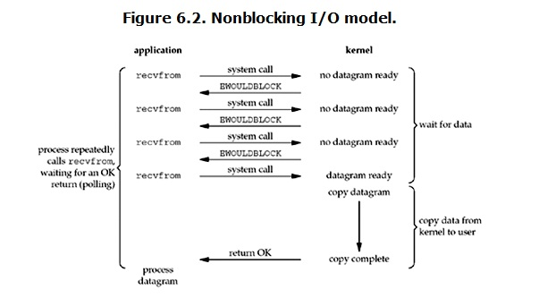
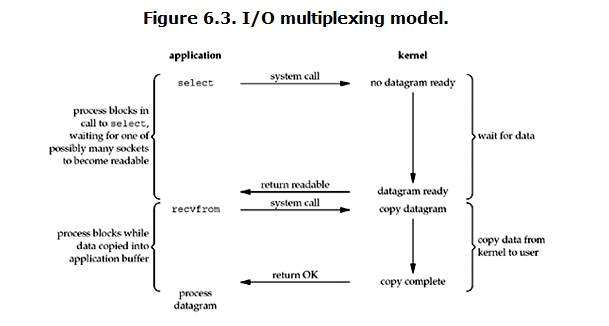
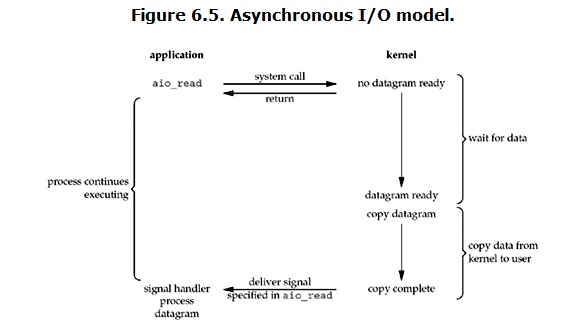
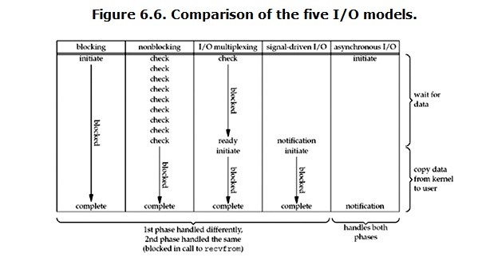

注：本文是对众多博客的学习和总结，可能存在理解错误。请带着怀疑的眼光，同时如果有错误希望能指出。
同步 IO 和异步 IO，阻塞 IO 和非阻塞 IO 分别是什么，到底有什么区别？不同的人在不同的上下文下给出的答案是不同的。所以先限定一下本文的上下文。
本文讨论的背景是 Linux 环境下的 network IO。
一 概念说明
在进行解释之前，首先要说明几个概念：
- 用户空间和内核空间
- 进程切换
- 进程的阻塞
- 文件描述符
- 缓存 I/O
用户空间与内核空间
现在操作系统都是采用虚拟存储器，那么对 32 位操作系统而言，它的寻址空间（虚拟存储空间）为 4G（2 的 32 次方）。操作系统的核心是内核，独立于普通的应用程序，可以访问受保护的内存空间，也有访问底层硬件设备的所有权限。为了保证用户进程不能直接操作内核（kernel），保证内核的安全，操作系统将虚拟空间划分为两部分，一部分为内核空间，一部分为用户空间。对于 Linux 操作系统而言，将最高的 1G 字节（从虚拟地址 0xC0000000 到 0xFFFFFFFF），供内核使用，称为内核空间，而将较低的 3G 字节（从虚拟地址 0x00000000 到 0xBFFFFFFF），供各个进程使用，称为用户空间。
进程切换
为了控制进程的执行，内核必须有能力挂起正在 CPU 上运行的进程，并恢复以前挂起的某个进程的执行。这种行为被称为进程切换。因此可以说，任何进程都是在操作系统内核的支持下运行的，是与内核紧密相关的。
从一个进程的运行转到另一个进程上运行，这个过程中经过下面这些变化：
- 保存处理机上下文，包括程序计数器和其他寄存器。
- 更新 PCB 信息。
- 把进程的 PCB 移入相应的队列，如就绪、在某事件阻塞等队列。
- 选择另一个进程执行，并更新其 PCB。
- 更新内存管理的数据结构。
- 恢复处理机上下文。
注：总而言之，进程切换是相当耗资源的操作，具体细节可以参考操作系统中进程调度与上下文切换的相关内容。
进程的阻塞
正在执行的进程，由于期待的某些事件未发生，如请求系统资源失败、等待某种操作的完成、新数据尚未到达或无新工作做等，则由系统自动执行阻塞原语（Block），使自己由运行状态变为阻塞状态。可见，进程的阻塞是进程自身的一种主动行为，也因此只有处于运行态的进程（获得 CPU），才可能将其转为阻塞状态。当进程进入阻塞状态，是不占用 CPU 资源的。
文件描述符 fd
文件描述符（File descriptor）是计算机科学中的一个术语，是一个用于表述指向文件的引用的抽象化概念。
文件描述符在形式上是一个非负整数。实际上，它是一个索引值，指向内核为每一个进程所维护的该进程打开文件的记录表。当程序打开一个现有文件或者创建一个新文件时，内核向进程返回一个文件描述符。在程序设计中，一些涉及底层的程序编写往往会围绕着文件描述符展开。但是文件描述符这一概念往往只适用于 UNIX、Linux 这样的操作系统。
缓存 I/O
缓存 I/O 又被称作标准 I/O，大多数文件系统的默认 I/O 操作都是缓存 I/O。在 Linux 的缓存 I/O 机制中，操作系统会将 I/O 的数据缓存在文件系统的页缓存（page cache）中，也就是说，数据会先被拷贝到操作系统内核的缓冲区中，然后才会从操作系统内核的缓冲区拷贝到应用程序的地址空间。
缓存 I/O 的缺点：
数据在传输过程中需要在应用程序地址空间和内核进行多次数据拷贝操作，这些数据拷贝操作所带来的 CPU 以及内存开销是非常大的。
二 I/O 模式
刚才说了，对于一次 IO 访问（以 read 举例），数据会先被拷贝到操作系统内核的缓冲区中，然后才会从操作系统内核的缓冲区拷贝到应用程序的地址空间。所以说，当一个 read 操作发生时，它会经历两个阶段：
- 等待数据准备 (Waiting for the data to be ready)
- 将数据从内核拷贝到进程中 (Copying the data from the kernel to the process)
正是因为这两个阶段，Linux 系统产生了下面五种网络模式的方案。
- 阻塞 I/O（blocking IO）
- 非阻塞 I/O（nonblocking IO）
- I/O 多路复用（IO multiplexing）
- 信号驱动 I/O（signal driven IO）
- 异步 I/O（asynchronous IO）
注：由于 signal driven IO 在实际中并不常用，所以这里只提及剩下的四种 IO Model。
阻塞 I/O（blocking IO）
在 Linux 中，默认情况下所有的 socket 都是 blocking，一个典型的读操作流程大概是这样：

当用户进程调用了 recvfrom 这个系统调用，kernel 就开始了 IO 的第一个阶段：准备数据（对于网络 IO 来说，很多时候数据在一开始还没有到达。比如，还没有收到一个完整的 UDP 包。这个时候 kernel 就要等待足够的数据到来）。这个过程需要等待，也就是说数据被拷贝到操作系统内核的缓冲区中是需要一个过程的。而在用户进程这边，整个进程会被阻塞（当然，是进程自己选择的阻塞）。当 kernel 一直等到数据准备好了，它就会将数据从 kernel 中拷贝到用户内存，然后 kernel 返回结果，用户进程才解除 block 的状态，重新运行起来。
所以，blocking IO 的特点就是在 IO 执行的两个阶段都被 block 了。
非阻塞 I/O（nonblocking IO）
Linux 下，可以通过设置 socket 使其变为 non-blocking。当对一个 non-blocking socket 执行读操作时，流程是这个样子：

当用户进程发出 read 操作时，如果 kernel 中的数据还没有准备好，那么它并不会 block 用户进程，而是立刻返回一个 error。从用户进程角度讲，它发起一个 read 操作后，并不需要等待，而是马上就得到了一个结果。用户进程判断结果是一个 error 时，它就知道数据还没有准备好，于是它可以再次发送 read 操作。一旦 kernel 中的数据准备好了，并且又再次收到了用户进程的 system call，那么它马上就将数据拷贝到了用户内存，然后返回。
所以，nonblocking IO 的特点是用户进程需要不断的主动询问 kernel 数据好了没有。
I/O 多路复用（IO multiplexing）
IO multiplexing 就是我们说的 select，poll，epoll，有些地方也称这种 IO 方式为 event driven IO。select/epoll 的好处就在于单个 process 就可以同时处理多个网络连接的 IO。它的基本原理就是 select，poll，epoll 这几个 function 会不断的监视自己负责的所有 socket（select/poll 靠轮询，epoll 靠事件回调），当某个 socket 有数据到达了，就通知用户进程。

当用户进程调用了 select，那么整个进程会被 block，而同时，kernel 会“监视”所有 select 负责的 socket，当任何一个 socket 中的数据准备好了，select 就会返回。这个时候用户进程再调用 read 操作，将数据从 kernel 拷贝到用户进程。
所以，I/O 多路复用的特点是通过一种机制一个进程能同时等待多个文件描述符，而这些文件描述符（套接字描述符）其中的任意一个进入读就绪状态，select() 函数就可以返回。
这个图和 blocking IO 的图其实并没有太大的不同，事实上，还更差一些。因为这里需要使用两个 system call（select 和 recvfrom），而 blocking IO 只调用了一个 system call（recvfrom）。但是，用 select 的优势在于它可以同时处理多个 connection。
所以，如果处理的连接数不是很高的话，使用 select/epoll 的 web server 不一定比使用 multi-threading + blocking IO 的 web server 性能更好，可能延迟还更大。select/epoll 的优势并不是对于单个连接能处理得更快，而是在于能处理更多的连接。
在 IO multiplexing Model 中，实际中对于每一个 socket，一般都设置成为 non-blocking，但是，如上图所示，整个用户的 process 其实是一直被 block 的。只不过 process 是被 select 这个函数 block，而不是被 socket IO 给 block。
异步 I/O（asynchronous IO）
Linux 下的 asynchronous IO 其实用得很少。先看一下它的流程：

用户进程发起 read 操作之后，立刻就可以开始去做其它的事。而另一方面，从 kernel 的角度，当它收到一个 asynchronous read 之后，首先它会立刻返回，所以不会对用户进程产生任何 block。然后，kernel 会等待数据准备完成，然后将数据拷贝到用户内存，当这一切都完成之后，kernel 会给用户进程发送一个 signal，告诉它 read 操作完成了。
总结
blocking 和 non-blocking 的区别
调用 blocking IO 会一直 block 住对应的进程直到操作完成，而 non-blocking IO 在 kernel 还在准备数据的情况下会立刻返回。
synchronous IO 和 asynchronous IO 的区别
在说明 synchronous IO 和 asynchronous IO 的区别之前，需要先给出两者的定义。POSIX 的定义是这样子的：
- A synchronous I/O operation causes the requesting process to be blocked until that I/O operation completes;
- An asynchronous I/O operation does not cause the requesting process to be blocked;
两者的区别就在于 synchronous IO 做“IO operation”的时候会将 process 阻塞。按照这个定义，之前所述的 blocking IO，non-blocking IO，IO multiplexing 都属于 synchronous IO。
有人会说，non-blocking IO 并没有被 block 啊。这里有个非常“狡猾”的地方，定义中所指的“IO operation”是指真实的 IO 操作，就是例子中的 recvfrom 这个 system call。non-blocking IO 在执行 recvfrom 这个 system call 的时候，如果 kernel 的数据没有准备好，这时候不会 block 进程。但是，当 kernel 中数据准备好的时候，recvfrom 会将数据从 kernel 拷贝到用户内存中，在这段时间内，进程是被 block 的。
而 asynchronous IO 则不一样，当进程发起 IO 操作之后，就直接返回再也不理睬了，直到 kernel 发送一个信号，告诉进程说 IO 完成。在这整个过程中，进程完全没有被 block。
各个 IO Model 的比较如图所示：

通过上面的图片，可以发现 non-blocking IO 和 asynchronous IO 的区别还是很明显的。在 non-blocking IO 中，虽然进程大部分时间都不会被 block，但是它仍然要求进程去主动的 check，并且当数据准备完成以后，也需要进程主动的再次调用 recvfrom 来将数据拷贝到用户内存。而 asynchronous IO 则完全不同。它就像是用户进程将整个 IO 操作交给了他人（kernel）完成，然后他人做完后发信号通知。在此期间，用户进程不需要去检查 IO 操作的状态，也不需要主动的去拷贝数据。
三 I/O 多路复用之 select、poll、epoll 详解
select，poll，epoll 都是 IO 多路复用的机制。I/O 多路复用就是通过一种机制，一个进程可以监视多个描述符，一旦某个描述符就绪（一般是读就绪或者写就绪），能够通知程序进行相应的读写操作。但 select，poll，epoll 本质上都是同步 I/O，因为它们都需要在读写事件就绪后自己负责进行读写，也就是说这个读写过程是阻塞的，而异步 I/O 则无需自己负责进行读写，异步 I/O 的实现会负责把数据从内核拷贝到用户空间。（这里啰嗦下）
三者在接口与性能上的详细对比，可以参考本站的《select/poll/epoll 区别》。
select
int select (int n, fd_set *readfds, fd_set *writefds, fd_set *exceptfds, struct timeval *timeout);select 函数监视的文件描述符分 3 类，分别是 readfds、writefds 和 exceptfds。调用后 select 函数会阻塞，直到有描述符就绪（有数据可读、可写、或者有异常），或者超时（timeout 指定最长等待时间：传 NULL 表示一直阻塞，直到有描述符就绪才返回；传一个时间值为 0 的 timeval 则立即返回，相当于非阻塞轮询），函数返回。当 select 函数返回后，可以通过遍历 fd_set，来找到就绪的描述符。
select 目前几乎在所有的平台上支持，其良好跨平台支持也是它的一个优点。select 的一个缺点在于单个进程能够监视的文件描述符的数量存在最大限制（由 FD_SETSIZE 决定），在 Linux 上一般为 1024。虽然可以通过改大这个宏、甚至重新编译内核的方式提升这一限制，但 select 本身的遍历是 O(n) 的，描述符数量一多，效率同样会被拖下来。
（select 的内核实现细节，可以参考本站的《select 源码简析》。）
poll
int poll (struct pollfd *fds, unsigned int nfds, int timeout);不同于 select 使用三个位图来表示三个 fd_set 的方式，poll 使用一个 pollfd 指针实现。
struct pollfd {
int fd; /* file descriptor */
short events; /* requested events to watch */
short revents; /* returned events witnessed */
};pollfd 结构包含了要监视的 event 和发生的 event，不再使用 select“参数-值”传递的方式。同时，pollfd 并没有最大数量限制（但是数量过大后性能也是会下降）。和 select 函数一样，poll 返回后，需要轮询 pollfd 来获取就绪的描述符。
从上面看，select 和 poll 都需要在返回后，通过遍历文件描述符来获取已经就绪的 socket。事实上，同时连接的大量客户端在一时刻可能只有很少的处于就绪状态，因此随着监视的描述符数量的增长，其效率也会线性下降。
epoll
epoll 是在 Linux 2.6 内核中提出的，是之前的 select 和 poll 的增强版本。相对于 select 和 poll 来说，epoll 更加灵活，没有描述符限制。epoll 使用一个文件描述符管理多个描述符，将用户相关的文件描述符的事件存放到内核的一个事件表中，这样在用户空间和内核空间的 copy 只需一次。
一 epoll 操作过程
epoll 操作过程需要三个接口，分别如下：
int epoll_create(int size); //创建一个epoll的句柄，size用来告诉内核这个监听的数目一共有多大
int epoll_ctl(int epfd, int op, int fd, struct epoll_event *event);
int epoll_wait(int epfd, struct epoll_event * events, int maxevents, int timeout);1. int epoll_create(int size)
创建一个 epoll 的句柄，size 用来告诉内核这个监听的数目一共有多大，这个参数不同于 select() 中的第一个参数（后者给出的是最大监听的 fd+1 的值），参数 size 并不是限制 epoll 所能监听的描述符最大个数，只是对内核初始分配内部数据结构的一个建议（自 Linux 2.6.8 起，size 已经被内核忽略，但仍要求大于 0）。
当创建好 epoll 句柄后，它就会占用一个 fd 值，在 Linux 下如果查看 /proc/进程id/fd/，是能够看到这个 fd 的，所以在使用完 epoll 后，必须调用 close() 关闭，否则可能导致 fd 被耗尽。
2. int epoll_ctl(int epfd, int op, int fd, struct epoll_event *event)
函数是对指定描述符 fd 执行 op 操作。
- epfd：是
epoll_create()的返回值。 - op：表示 op 操作，用三个宏来表示：添加
EPOLL_CTL_ADD，删除EPOLL_CTL_DEL，修改EPOLL_CTL_MOD。分别添加、删除和修改对 fd 的监听事件。 - fd：是需要监听的 fd（文件描述符）。
- epoll_event：是告诉内核需要监听什么事，
struct epoll_event结构如下：
struct epoll_event {
__uint32_t events; /* Epoll events */
epoll_data_t data; /* User data variable */
};其中 events 可以是以下几个宏的集合：
EPOLLIN：表示对应的文件描述符可以读（包括对端 socket 正常关闭）；EPOLLOUT：表示对应的文件描述符可以写；EPOLLPRI：表示对应的文件描述符有紧急的数据可读（这里应该表示有带外数据到来）；EPOLLERR：表示对应的文件描述符发生错误；EPOLLHUP：表示对应的文件描述符被挂断；EPOLLET：将 EPOLL 设为边缘触发（Edge Triggered）模式，这是相对于水平触发（Level Triggered）来说的。EPOLLONESHOT：只监听一次事件，当监听完这次事件之后，如果还需要继续监听这个 socket 的话，需要再次把这个 socket 加入到 EPOLL 队列里。
3. int epoll_wait(int epfd, struct epoll_event * events, int maxevents, int timeout)
等待 epfd 上的 I/O 事件，最多返回 maxevents 个事件。
参数 events 是调用者分配的数组，用来从内核得到事件的集合；maxevents 告知内核这个 events 数组有多大，其值必须大于 0，且不能超过 events 数组本身的容量，它和 epoll_create() 传入的 size 并没有约束关系。参数 timeout 是超时时间（毫秒）：大于 0 表示最多等待这么多毫秒，0 表示立即返回（非阻塞轮询），-1 表示永久阻塞。该函数返回需要处理的事件数目，返回 0 表示超时且没有事件就绪。
二 工作模式
epoll 对文件描述符的操作有两种模式：LT（level trigger）和 ET（edge trigger）。LT 模式是默认模式，LT 模式与 ET 模式的区别如下：
LT 模式：当 epoll_wait 检测到描述符事件发生并将此事件通知应用程序，应用程序可以不立即处理该事件。下次调用 epoll_wait 时，会再次响应应用程序并通知此事件。
ET 模式：当 epoll_wait 检测到描述符事件发生并将此事件通知应用程序，应用程序必须立即处理该事件。如果不处理，下次调用 epoll_wait 时，不会再次响应应用程序并通知此事件。
1. LT 模式
LT（level triggered）是缺省的工作方式，并且同时支持 block 和 no-block socket。在这种做法中，内核告诉你一个文件描述符是否就绪了，然后你可以对这个就绪的 fd 进行 IO 操作。如果你不作任何操作，内核还是会继续通知你的。
2. ET 模式
ET（edge-triggered）是高速工作方式，只支持 no-block socket。在这种模式下，当描述符从未就绪变为就绪时，内核通过 epoll 告诉你。然后它会假设你知道文件描述符已经就绪，并且不会再为那个文件描述符发送更多的就绪通知，直到你做了某些操作导致那个文件描述符不再为就绪状态了（比如，你在发送，接收或者接收请求，或者发送接收的数据少于一定量时导致了一个 EWOULDBLOCK 错误）。但是请注意，如果一直不对这个 fd 作 IO 操作（从而导致它再次变成未就绪），内核不会发送更多的通知（only once）。
ET 模式在很大程度上减少了 epoll 事件被重复触发的次数，因此效率要比 LT 模式高。epoll 工作在 ET 模式的时候，必须使用非阻塞套接口，以避免由于一个文件句柄的阻塞读/阻塞写操作把处理多个文件描述符的任务饿死。
3. 总结
假如有这样一个例子：
- 我们已经把一个用来从管道中读取数据的文件句柄（RFD）添加到 epoll 描述符
- 这个时候从管道的另一端被写入了 2KB 的数据
- 调用
epoll_wait(2)，并且它会返回 RFD，说明它已经准备好读取操作 - 然后我们读取了 1KB 的数据
- 调用
epoll_wait(2)……
LT 模式：
如果是 LT 模式，那么在第 5 步调用 epoll_wait(2) 之后，仍然能收到通知。
ET 模式：
如果我们在第 1 步将 RFD 添加到 epoll 描述符的时候使用了 EPOLLET 标志，那么在第 5 步调用 epoll_wait(2) 之后将有可能会挂起，因为剩余的数据还存在于文件的输入缓冲区内，而且数据发出端还在等待一个针对已经发出数据的反馈信息。只有在监视的文件句柄上发生了某个事件的时候 ET 工作模式才会汇报事件。因此在第 5 步的时候，调用者可能会放弃等待仍在存在于文件输入缓冲区内的剩余数据。
当使用 epoll 的 ET 模型来工作时，当产生了一个 EPOLLIN 事件后，读数据的时候需要考虑的是：如果 recv() 返回的大小等于请求的大小，那么很有可能是缓冲区还有数据未读完，也意味着该次事件还没有处理完，所以还需要再次读取：
// rs：循环控制标记，非 0 表示可能还有数据未读完，需要继续读
while(rs){
buflen = recv(events[i].data.fd, buf, sizeof(buf), 0);
if(buflen < 0){
// 由于是非阻塞的模式,所以当errno为EAGAIN时,表示当前缓冲区已无数据可读
// 在这里就当作是该次事件已处理。
if(errno == EAGAIN){
break;
}
else{
return;
}
}
else if(buflen == 0){
// 这里表示对端的socket已正常关闭.
}
if(buflen == sizeof(buf)){
rs = 1; // 需要再次读取
}
else{
rs = 0;
}
}Linux 中的 EAGAIN 含义
Linux 环境下开发经常会碰到很多错误（设置 errno），其中 EAGAIN 是比较常见的一个错误（比如用在非阻塞操作中）。
从字面上来看，是提示再试一次。这个错误经常出现在当应用程序进行一些非阻塞（non-blocking）操作（对文件或 socket）的时候。
例如，以 O_NONBLOCK 的标志打开文件/socket/FIFO，如果你连续做 read 操作而没有数据可读。此时程序不会阻塞起来等待数据准备就绪返回，read 函数会返回一个错误 EAGAIN，提示你的应用程序现在没有数据可读请稍后再试。
又例如，当一个系统调用（比如 fork）因为没有足够的资源（比如虚拟内存）而执行失败，返回 EAGAIN 提示其再调用一次（也许下次就能成功）。
三 代码演示
下面是一段不完整的代码且格式不对，意在表述上面的过程，去掉了一些模板代码。
#define IPADDRESS "127.0.0.1"
#define PORT 8787
#define MAXSIZE 1024
#define LISTENQ 5
#define FDSIZE 1000
#define EPOLLEVENTS 100
listenfd = socket_bind(IPADDRESS,PORT);
struct epoll_event events[EPOLLEVENTS];
//创建一个描述符
epollfd = epoll_create(FDSIZE);
//添加监听描述符事件
add_event(epollfd,listenfd,EPOLLIN);
//循环等待
for ( ; ; ){
//该函数返回已经准备好的描述符事件数目
ret = epoll_wait(epollfd,events,EPOLLEVENTS,-1);
//处理接收到的连接
handle_events(epollfd,events,ret,listenfd,buf);
}
//事件处理函数
static void handle_events(int epollfd,struct epoll_event *events,int num,int listenfd,char *buf)
{
int i;
int fd;
//进行遍历；这里只要遍历已经准备好的 io 事件。num 是 epoll_wait 的返回值（就绪事件数），
//既不是当初 epoll_create 时的 FDSIZE，也不是 events 数组的容量 EPOLLEVENTS。
for (i = 0;i < num;i++)
{
fd = events[i].data.fd;
//根据描述符的类型和事件类型进行处理
if ((fd == listenfd) &&(events[i].events & EPOLLIN))
handle_accept(epollfd,listenfd);
else if (events[i].events & EPOLLIN)
do_read(epollfd,fd,buf);
else if (events[i].events & EPOLLOUT)
do_write(epollfd,fd,buf);
}
}
//添加事件
static void add_event(int epollfd,int fd,int state){
struct epoll_event ev;
ev.events = state;
ev.data.fd = fd;
epoll_ctl(epollfd,EPOLL_CTL_ADD,fd,&ev);
}
//处理接收到的连接
static void handle_accept(int epollfd,int listenfd){
int clifd;
struct sockaddr_in cliaddr;
socklen_t cliaddrlen;
clifd = accept(listenfd,(struct sockaddr*)&cliaddr,&cliaddrlen);
if (clifd == -1)
perror("accept error:");
else {
printf("accept a new client: %s:%d\n",inet_ntoa(cliaddr.sin_addr),cliaddr.sin_port);
//添加一个客户描述符和事件
add_event(epollfd,clifd,EPOLLIN);
}
}
//读处理
static void do_read(int epollfd,int fd,char *buf){
int nread;
nread = read(fd,buf,MAXSIZE);
if (nread == -1) {
perror("read error:");
close(fd); //记住close fd
delete_event(epollfd,fd,EPOLLIN); //删除监听
}
else if (nread == 0) {
fprintf(stderr,"client close.\n");
close(fd); //记住close fd
delete_event(epollfd,fd,EPOLLIN); //删除监听
}
else {
printf("read message is : %s",buf);
//修改描述符对应的事件，由读改为写
modify_event(epollfd,fd,EPOLLOUT);
}
}
//写处理
static void do_write(int epollfd,int fd,char *buf) {
int nwrite;
nwrite = write(fd,buf,strlen(buf));
if (nwrite == -1){
perror("write error:");
close(fd); //记住close fd
delete_event(epollfd,fd,EPOLLOUT); //删除监听
}else{
modify_event(epollfd,fd,EPOLLIN);
}
memset(buf,0,MAXSIZE);
}
//删除事件
static void delete_event(int epollfd,int fd,int state) {
struct epoll_event ev;
ev.events = state;
ev.data.fd = fd;
epoll_ctl(epollfd,EPOLL_CTL_DEL,fd,&ev);
}
//修改事件
static void modify_event(int epollfd,int fd,int state){
struct epoll_event ev;
ev.events = state;
ev.data.fd = fd;
epoll_ctl(epollfd,EPOLL_CTL_MOD,fd,&ev);
}
//注：另外一端我就省了